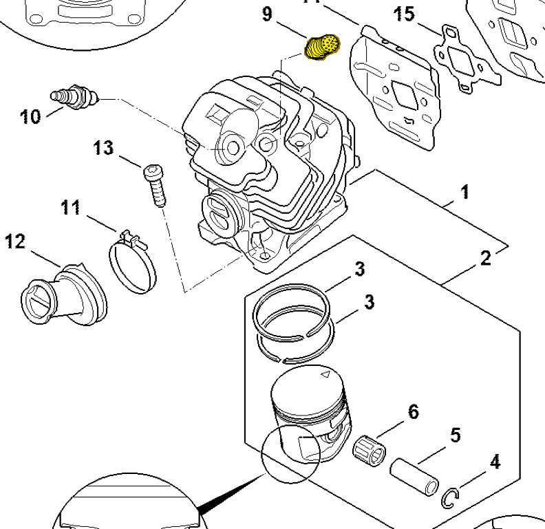

Decompression valve
1142 020 9400
MS 462 — cylinder
Decompression valve used in both MS 462 cylinder configurations.
Item 9 Qty listed: 1

MS 462 C-M Z spare-parts list, 10/29/2024. Drawing p. 9; parts table p. 10.
Suggest a correctionGitHub · sign-in required